Diseño visual y experiencia de usuario para el lanzamiento de una marca de rastreo vehicular digital
Branding

Nubitrack es una marca digital de rastreo vehicular enfocada en ofrecer una experiencia sencilla e
intuitiva para usuarios comunes. El proyecto nació desde cero: comencé con el rediseño de una
antigua plataforma GPS poco funcional, lideré la creación de la identidad visual, diseñé la
aplicación móvil y desarrollé la landing page de ecommerce.
Mi objetivo principal fue crear una solución clara, visualmente atractiva y accesible para personas de 30 a 60 años con ingresos medios-altos que buscan monitorear sus vehículos sin necesidad de conocimientos técnicos avanzados.
Mi objetivo principal fue crear una solución clara, visualmente atractiva y accesible para personas de 30 a 60 años con ingresos medios-altos que buscan monitorear sus vehículos sin necesidad de conocimientos técnicos avanzados.
Contexto y desafío
Antes de que existiera Nubitrack como marca, el proyecto partía de una
plataforma técnica muy básica, sin identidad visual ni diseño enfocado en el
usuario. Aunque esa versión nunca se lanzó al mercado, se identificó la oportunidad
de transformar la experiencia en algo más accesible, visual y pensado para usuarios
comunes.
Problema principal
Las plataformas de rastreo vehicular suelen estar llenas de funciones, pero pocas son intuitivas para el usuario común. El reto fue crear una interfaz moderna, comprensible y visualmente atractiva, que ofreciera las funcionalidades clave sin abrumar. La mayoría de los productos del mercado estaban diseñados para usuarios técnicos, lo que generaba una gran barrera para personas que simplemente querían localizar su coche o recibir alertas de mantenimiento.
Objetivo de diseño
Diseñar una experiencia accesible y clara para usuarios de entre 30 y 60 años, con ingresos medios-altos, que necesitan monitorear sus vehículos pero no tienen experiencia técnica ni paciencia para plataformas complicadas.
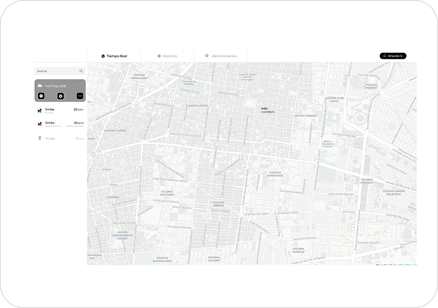
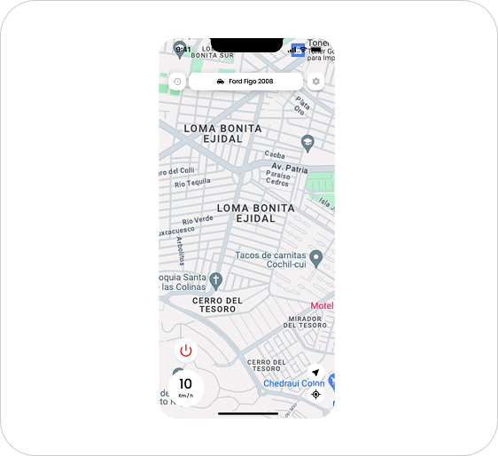
Investigación y análisis del mercado
El proceso de diseño comenzó con una fase de investigación comparativa. Analizamos plataformas de rastreo vehicular como Solidtrack y Micodus, identificando patrones comunes en su estructura, diseño y nivel de complejidad. Aunque ofrecían muchas funcionalidades, compartían una gran debilidad: interfaces confusas, sobrecargadas y poco pensadas para el usuario común.
Nuestro objetivo fue revertir esa lógica: crear una app visualmente clara, fácil de usar y enfocada en lo esencial.
Investigación con usuarios
Combinamos investigación de segundo grado con entrevistas a usuarios potenciales del segmento objetivo: personas de entre 30 y 60 años, con vehículos propios y sin conocimientos técnicos avanzados. Esta investigación nos permitió validar que la mayoría de los usuarios solo requerían tres cosas:
- Ver la ubicación en tiempo real de su coche
- Recibir alertas claras (movimiento, velocidad, mantenimiento)
- Entender de forma rápida qué sucede con su vehículo
Enfoque metodológico
Para estructurar el proyecto utilizamos la metodología de Design Thinking, lo que permitió mantener un enfoque centrado en el usuario en cada etapa:
- Empatizar: comprender los problemas reales de personas no técnicas.
- Definir: identificar las funciones prioritarias.
- Idear: explorar formas claras y eficientes de presentarlas.
- Prototipar: crear wireframes y flujos de usuario.
- Testear: validar con usuarios reales y ajustar la interfaz.
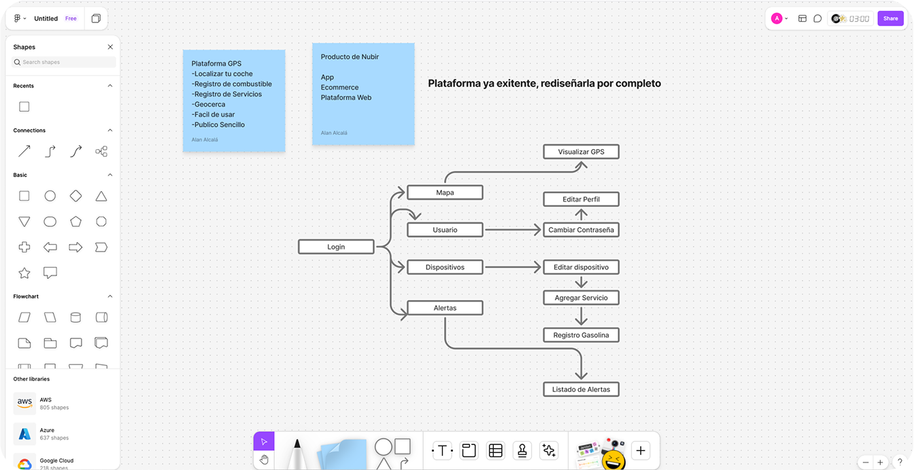
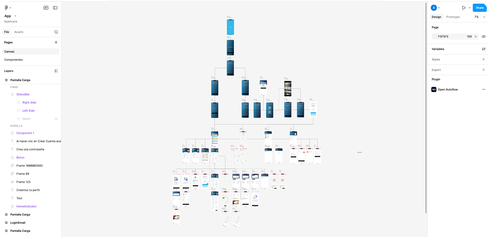
Construcción visual alineada con la marca
El diseño de la interfaz tomó como base la identidad de Nubir, la empresa matriz de Nubitrack. Partimos de su paleta de colores original, sumando un azul más intenso como color secundario para darle fuerza a la submarca y mejorar la jerarquía visual dentro de la app. Esta combinación ayudó a transmitir tecnología, confianza y claridad.
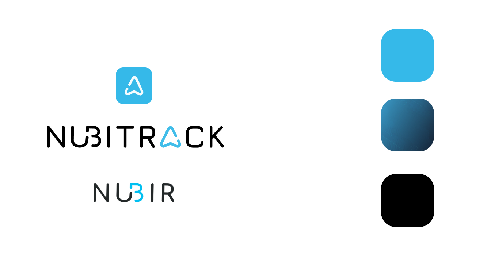
Principios de UI aplicados
Desde el inicio, el objetivo fue mantener una interfaz minimalista, limpia y funcional. Para lograrlo se aplicaron varias decisiones clave:
- Textos claros y directos, sin tecnicismos.
- Íconos acompañados de texto, para facilitar la comprensión.
- Tamaños grandes en botones e íconos, adaptados a usuarios de todas las edades.
- Mensajes de ayuda contextual en las zonas más complejas (como configuraciones o alertas).
- Animaciones suaves, como carruseles explicativos y transiciones de modales desde la parte inferior, buscando una experiencia más fluida.
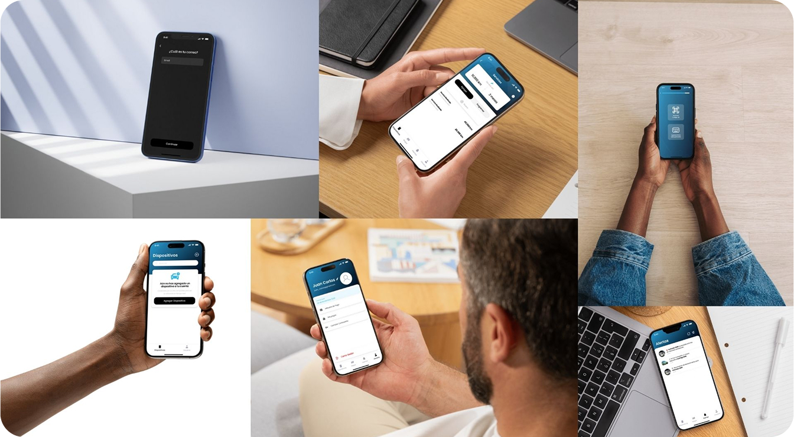
Elementos visuales
Aunque la mayoría de los íconos se tomaron de bibliotecas especializadas, también se crearon algunos personalizados, como el ícono de geocerca, adaptado al estilo general de la app. Las ilustraciones utilizadas se generaron con herramientas de inteligencia artificial y se adaptaron cuidadosamente para mantener coherencia visual con el resto del diseño.
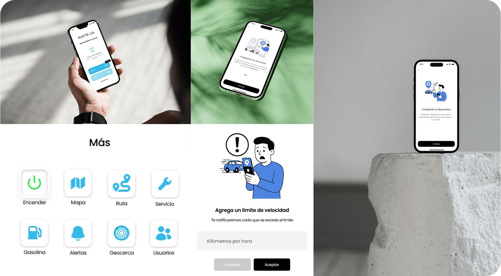
Diseño de la Landing Page + Ecommerce
Objetivo
Diseñar y desarrollar una plataforma visual que funcione como vitrina digital para Nubitrack: donde los usuarios puedan conocer el producto, entender sus beneficios y comprar el dispositivo GPS de forma fácil y segura.
Rol
Me encargué del diseño UX/UI completo y también de la implementación visual del sitio. Organicé los bloques de contenido, diseñé cada componente responsivo y programé la interfaz de usuario.
Desafíos clave
Unificar objetivos: Informar sobre la plataforma de rastreo y al mismo tiempo facilitar la compra del dispositivo GPS.
Mantener la coherencia visual con la app y la marca principal de Nubir.
Optimizar la experiencia móvil, ya que una gran parte del tráfico venía desde celulares.
Mantener la coherencia visual con la app y la marca principal de Nubir.
Optimizar la experiencia móvil, ya que una gran parte del tráfico venía desde celulares.
Soluciones implementadas
- Diseñé una estructura one page con scroll fluido, donde el usuario puede conocer el producto y comprarlo sin cambiar de vista.
- Destacamos la propuesta de valor en el primer pliegue: control de tu coche desde el celular, sin complicaciones.
- Usamos fotografías del producto y capturas de la app para generar confianza visual.
- Incorporé secciones breves y visuales con íconos, bullets e instrucciones claras sobre cómo funciona.
- Implementé botones de acción visibles y repetidos (compra, contacto), asegurando conversiones desde móvil o desktop.
Resultado
- Creamos una landing responsiva, moderna y clara que sirvió como puerta de entrada comercial al ecosistema Nubitrack. Además de posicionar visualmente a la marca, el sitio está optimizado para generar confianza y facilitar el proceso de compra en pocos pasos.
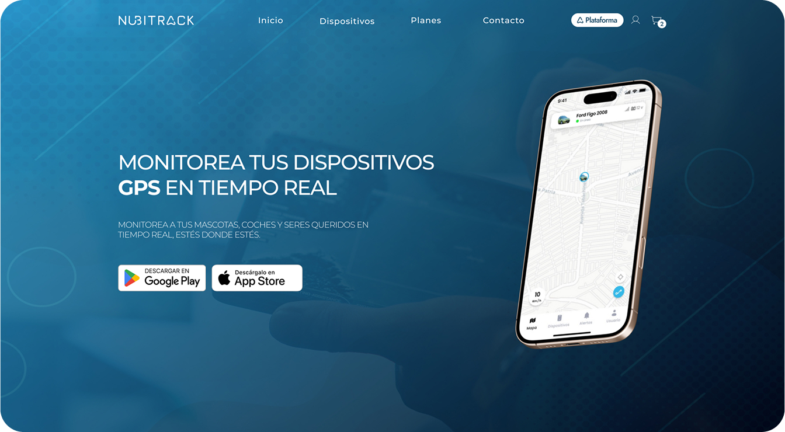
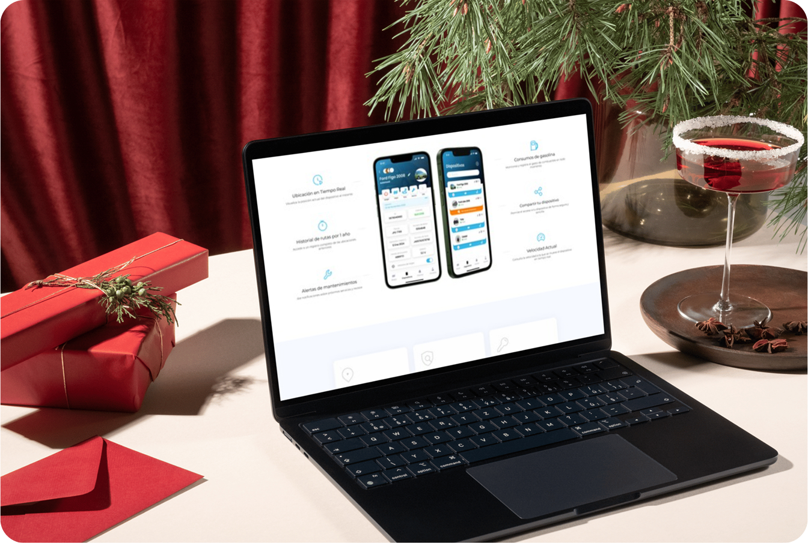
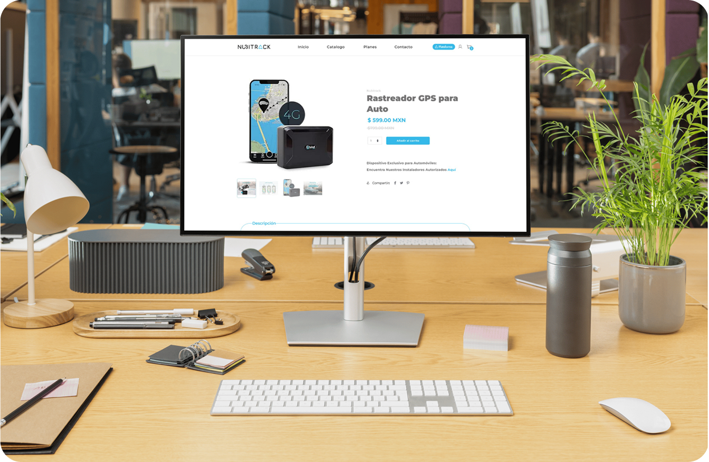
Resultados del proyecto
Creamos una aplicación intuitiva y visualmente clara, pensada específicamente para usuarios no técnicos entre 30 y 60 años.
Simplificamos flujos complejos como el armado de geocercas o alertas de velocidad, mediante instrucciones visibles, textos claros y modales accesibles.
El diseño fue bien recibido internamente y se convirtió en el nuevo estándar de usabilidad dentro de la empresa.
Se consolidó una identidad visual coherente entre app, plataforma web y landing page.
Lo que aprendí
A liderar un proyecto de UX/UI desde cero, tomando decisiones estratégicas y visuales alineadas al negocio.
A equilibrar simplicidad visual con funcionalidades técnicas complejas.
A validar decisiones con usuarios reales incluso sin datos previos, usando benchmarks y entrevistas estratégicas.
A coordinar el diseño con desarrollo web y mobile, manteniendo consistencia de marca y experiencia.
A equilibrar simplicidad visual con funcionalidades técnicas complejas.
A validar decisiones con usuarios reales incluso sin datos previos, usando benchmarks y entrevistas estratégicas.
A coordinar el diseño con desarrollo web y mobile, manteniendo consistencia de marca y experiencia.
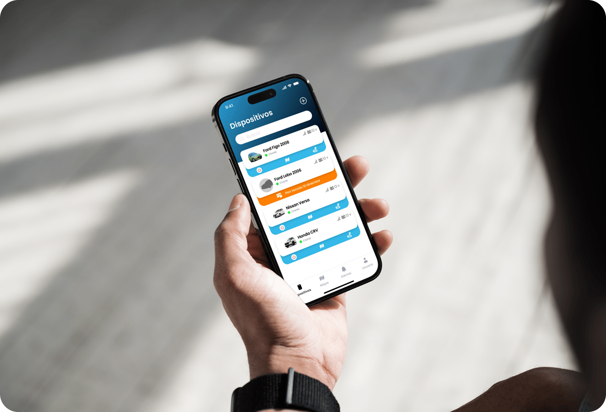
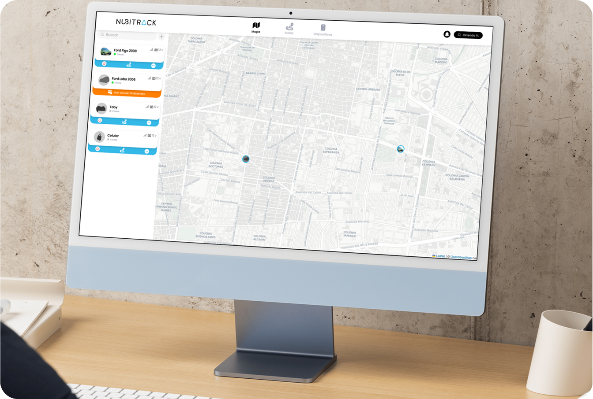
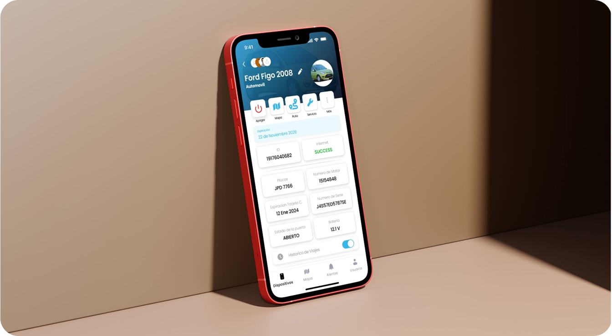